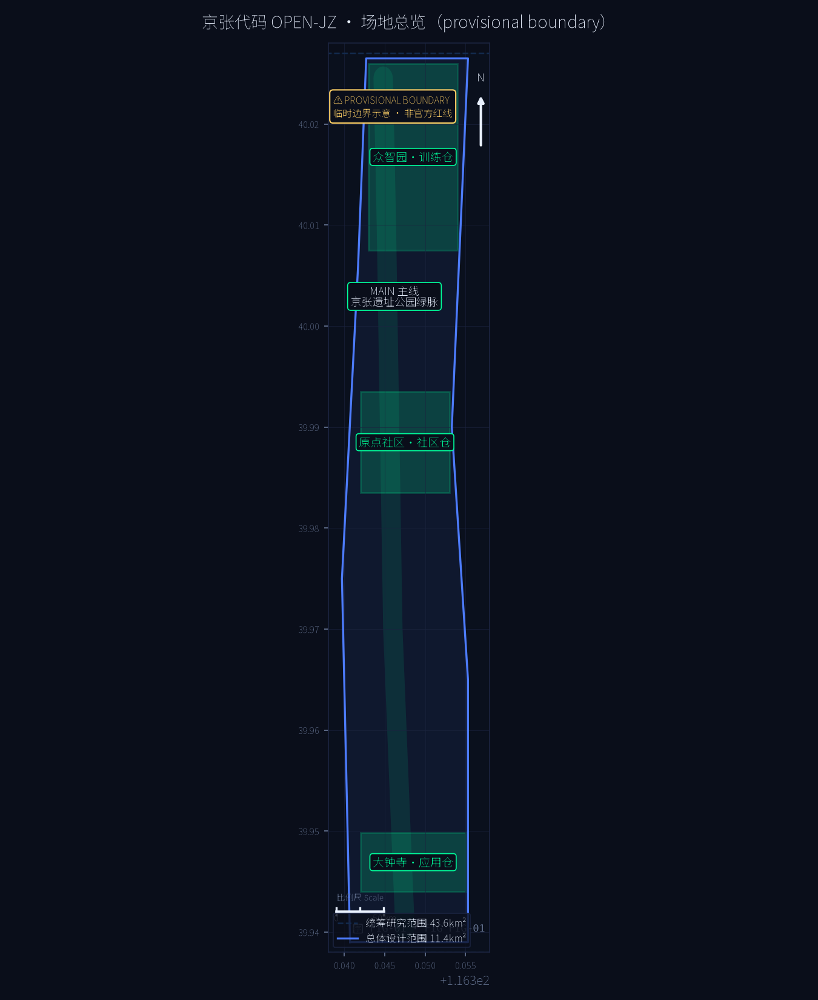
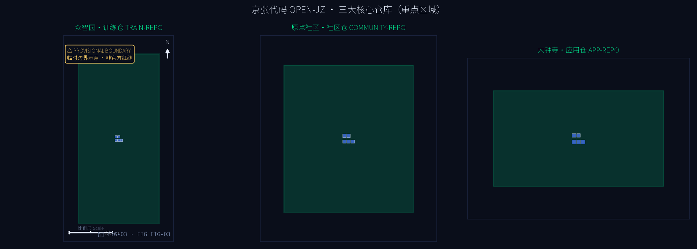
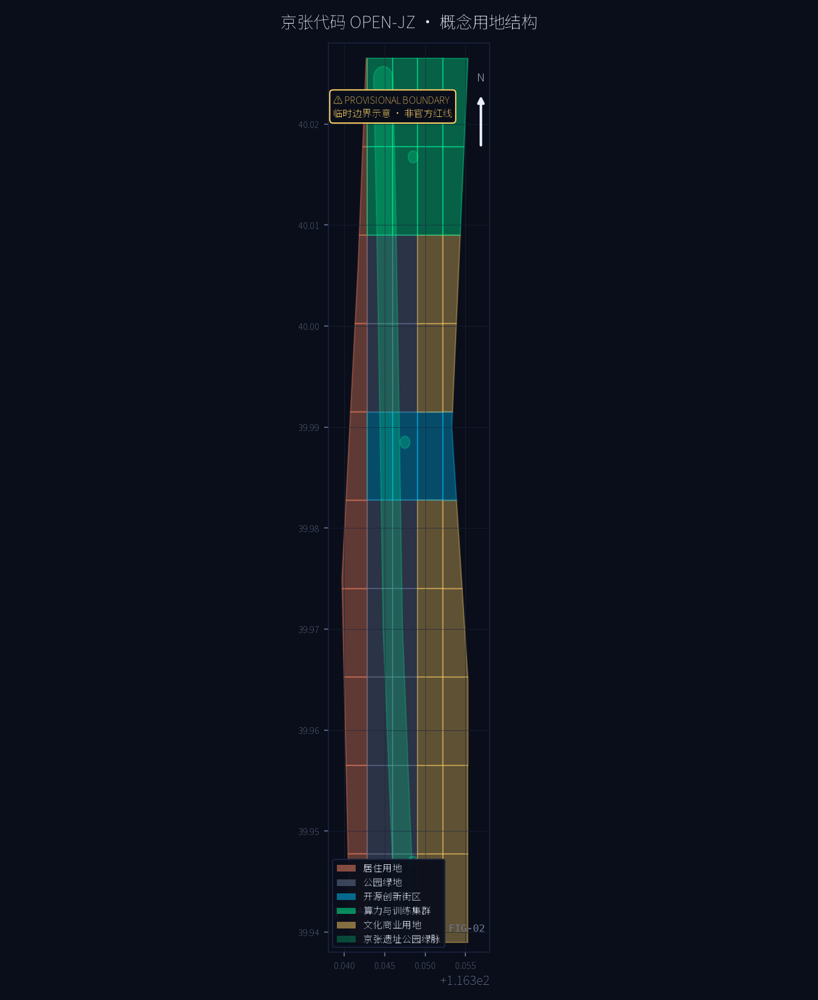
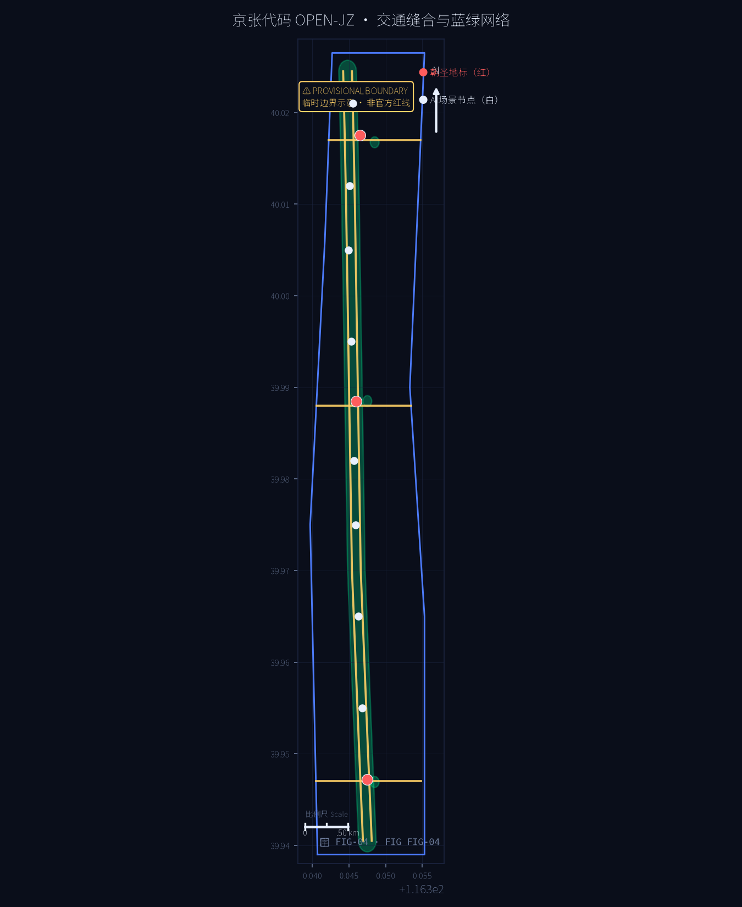
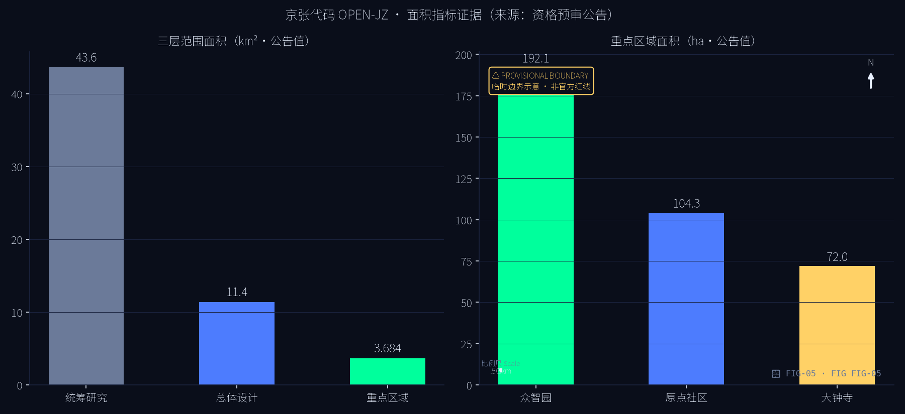

京张代码 OPEN-JZ：百年京张AI创新带开源城市操作系统概念方案
以「开源城市操作系统」为第一性概念：MAIN 主线（京张遗址公园绿脉）+ 三大核心仓库（众智园训练仓 / 北京AI原点社区仓 / 大钟寺应用仓）+ 三层协议（数据流通 / 场景测试 / 伦理治理），把城市更新组织为可提交、可评审、可合并、可回滚的开源流程。基于 provisional boundary 生成，保留精度警示与复算要求。
京张代码 OPEN-JZ：百年京张AI创新带开源城市操作系统概念方案
设计依据与资料清单
本 formal 方案以北京市规划和自然资源委员会海淀分局发布的《百年京张AI创新带城市设计国际方案征集资格预审公告》为第一依据，并以 brief/site-package/ 中经维护者登记的临时粗略边界、重点区域、枚举、指标和来源清单为机器可读依据 来源 来源。
方案生成前已读取 design_brief.json、allowed_design_space.json、sources.json、enums/、ranges/planning_limits.json、schemas/、standards/ 与 data/source_registry.json，并以 agent_taskbook.json 的 agent.1-agent.6 必选任务建立任务、范围、资料用途和缺口清单 来源 来源。
方案边界声明：本方案全部空间建议基于组织方登记的 provisional boundary（临时边界）生成，属概念建议、参考方案，可供专业团队深化研究，不替代正式规划，不构成政府审定结论 来源 来源。官方规划控制指标（容积率、建筑高度、建筑密度、绿地率、退线）尚未在资料包中提供，均按数据缺口处理，不推测伪精确值 深度。
| 层级 | 设计问题 | 方案回答 | 数据落点 |
|---|---|---|---|
| 统筹研究范围 43.6km² | AI 产业生态和未来城市形态如何组织 | 「开源城市操作系统」：内核-仓库-协议三层架构 | compliance_matrix.json、standard_matrix.json |
| 总体设计范围 11.4km² | 产业空间、城市更新、交通市政和风貌如何落图 | MAIN 主线 + 三大 REPO + 三层 PROTOCOL 横线 | 空间数据、空间数据 |
| 重点区域范围 368.4ha | 三处片区如何达到详细设计深度 | 训练仓 / 社区仓 / 应用仓分别给出空间动作与 AI 场景 | 空间数据 等 |
三层范围工作框架
方案按公告确定的三层范围组织：统筹研究范围（43.6km²）回答 AI 创新生态与未来城市形态；总体设计范围（11.4km²）把判断落实为更新总体框架、产业空间布局、交通市政支撑与城市风貌控制；重点区域范围（368.4ha）完成众智园、北京AI原点社区、大钟寺三处详细设计 来源 指标 指标。
三层工作不是割裂的图纸集合：统筹研究决定产业链与城市形态判断，总体设计把判断落实到更新项目、空间结构和设施承载，重点区域验证具体地块、建筑、交通、公共空间与 AI 应用场景的可实施性。任何无法从结构化数据复算的面积、比例、规模或项目数量，均不写入正式结论；受 provisional boundary 影响的结论在正文与 assumptions.json 中明确标注。

统筹研究范围产业与未来城市研究
总体概念：开源城市操作系统。 百年京张铁路是中国自主创新的起点，中关村是中国开源与软件产业的起点。方案把两者合流为「京张代码 OPEN-JZ」：城市不再是一次性绘制的图纸，而是持续演进的代码库——公共空间、产业空间与治理机制都是可版本化的模块，城市更新即提交（commit）、评审（review）、合并（merge）、可回滚（revert）。公众是评审者，开发者是贡献者，政府是维护者 来源。
面向任务书"五大功能"，方案建立对应转译 来源：
| 任务书功能 | 京张代码转译 | 空间落点 |
|---|---|---|
| AI 全栈自主创新体系 | 内核 KERNEL：自主算力、模型、框架与标准 | 众智园·训练仓 |
| 世界级 AI 创新生态 | 仓库网络 REPO-NET：开源协作与成果转化 | 原点社区·社区仓 |
| AI+场景赋能新范式 | 应用层 APPS：场景开放与测试验证 | 大钟寺·应用仓 |
| 智能化 AI 活力城市 | 运行时 RUNTIME：公共空间与生活场景 | MAIN 主线绿脉 |
| AI 治理全球话语权 | 治理协议 GOVERNANCE-PROTOCOL | 三协议横线 |
创新链组织：建立"高校策源 → 开源协作 → 企业转化 → 公共体验 → 国际传播"的链式空间协同框架，与海淀高校院所、头部企业、算力算法数据要素、孵化平台与科技服务资源耦合。产业战略指标、AI 创新指数、人才密度与空间供给类型写入 metrics.json，并标明官方值与设计建议值的区分。
总体设计范围城市更新与控规深度城市设计
总体设计范围提出「MAIN + REPO + PROTOCOL」空间结构 深度：
- MAIN 主线：京张遗址公园绿脉，南北贯通的概念公共主轴，慢行优先、历史叙事、AI 体验。在
geometry/green_space.geojson中以绿脉带表达 空间数据。 - 三大 REPO：众智园（训练仓）、北京AI原点社区（社区仓）、大钟寺（应用仓），以
geometry/key_areas.geojson三个重点区承载，内部以geometry/buildings.geojson表达概念更新建筑基底 空间数据。 - 三层 PROTOCOL 横线：三条东西缝合带分别承载数据流通、场景测试与伦理治理接口，以
geometry/roads.geojson概念道路表达东西缝合关系 空间数据。
用地结构：沿绿脉两侧组织 AI 研发、教育科研、文化商业、居住与公共服务用地条带，三个重点区核心布置算力训练集群、开源创新街区、智能终端与内容消费区，见 geometry/land_use.geojson 空间数据。开发强度与建筑高度因官方控制条件缺失，均标注为"待正式控规条件确认"，不以推测值冒充审定指标 标准。
拆改留方案：以"保留铁路遗址记忆、更新低效产业空间、增补 AI 创新载体"为原则。保留段：遗址公园带、文物与历史建筑（geometry/constraints.geojson 的 HERITAGE_PROTECTION 图层）；更新段：三个重点区内低效用地（geometry/buildings.geojson 概念更新基底）；新建段：协议横线缝合节点与公共空间 空间数据。
重点区域详细设计
训练仓 TRAIN-REPO · 众智园 AI 自主创新加速区（192.1ha）
围绕国家人工智能平台与全栈自主创新：布局算力训练集群、模型评测中心、AI 标准与安全治理实验室；提出「众智算塔」AI 朝圣地标——白天反射天空、夜间以光柱显示训练任务状态；结合清河文化打造低碳绿色创新交往环境与绿色空间 AI 场景 空间数据 标准。对外交通依托协议横线北线与轨道站点一体化接驳。
社区仓 COMMUNITY-REPO · 北京 AI 原点社区（104.3ha）
围绕近校创新与成果转化：设置开源代码广场、孵化器街区、成果展示发布厅与人才公寓；改造清华园车站遗址为「京张原点站·开源纪念碑广场」朝圣地标，作为开源文化的精神原点；强化校区-园区慢行联系、轨道站点一体化与青年友好生活配套 空间数据 标准。建筑拆改留以"保留历史站房、更新低效楼宇、增补创新空间"为序。
应用仓 APP-REPO · 大钟寺 AI 产业聚集区（72.0ha）
围绕领军企业、智能体与智能终端生态：布局智能终端体验街、内容消费与数据要素流通节点；以「大钟寺 AI 钟楼广场」为朝圣地标，用数据流声景复刻钟鼓意象；规划绿地复合利用、大钟寺站一体化与路口四象限步行连通，打通商业服务与 AI 体验的界面 空间数据。

AI 创新生态、人才画像与 AI+ 场景
10 张 AI 场景卡（geometry/public_space.geojson 以场景节点落位）：
| 编号 | 场景 | 落位 |
|---|---|---|
| S01 | 轨道巡检机器人步道 | MAIN 绿脉 |
| S02 | 无人配送环线 | 三重点区 |
| S03 | AI 慢行信号优化 | 绿脉过街 |
| S04 | 开源代码露天剧场 | 社区仓 |
| S05 | 场景测试街区 | 协议横线 |
| S06 | 数据要素公共展厅 | 应用仓 |
| S07 | AI 教育实验室带 | 教育科研带 |
| S08 | 数字孪生观测台 | 众智算塔 |
| S09 | AI 健康服务舱 | 社区节点 |
| S10 | 智能公交接驳线 | 轨道站点 |
3 个产业测试验证场景：① 自动驾驶接驳测试环（众智园-大钟寺）；② 机器人递送走廊（遗址公园段）；③ 城市级 AI 政务沙盒（治理协议层）。
5 类用户画像：开源开发者/研究员；AI 创业者与企业员工；大学生与青年人才；原住居民与银发人群；全球访客与参会者。
3 个 AI 朝圣地标：京张原点站（社区仓）、众智算塔（训练仓）、大钟寺 AI 钟楼（应用仓）空间数据。
用地、建筑规模与拆改留方案
用地结构以绿脉为主轴、协议横线为缝合带、三大仓库为核心地块（见 geometry/land_use.geojson），共划分五类概念用地：AI 研发用地、教育科研用地、文化商业用地、居住用地与公园绿地，实现设计范围内全覆盖、无重叠 空间数据。三类重点区核心分别布置算力与训练集群（AI-DATA）、开源创新街区（AI-OS）、智能终端与内容消费区（AI-APP），作为用地结构的功能锚点 空间数据。
建筑规模为概念建议值：metrics.json 中 building_footprint_area_sqm 由 15 栋概念更新建筑基底在 EPSG:4548 投影下复算得到，仅用于表达拆改留的空间量级与可实施性讨论，不换算为建筑面积承诺 指标。因官方开发强度（容积率、高度、密度）控制条件在资料包中缺失，方案不给出建筑规模总量与开发强度指标，相关结论标注为待正式控规条件确认 [assumption:A-CONTROLS-001]。
拆改留分类原则（对应 geometry/buildings.geojson 与 geometry/constraints.geojson）：保留——京张铁路遗址保护带、文物与历史站房（locked 图层 HERITAGE_PROTECTION，不做改动）空间数据；更新——三大仓库内低效产业楼宇，以概念更新基底表达；新建——协议横线缝合节点、AI 公共空间与朝圣地标周边载体。

交通、轨道、市政与公共服务设施
轨道与站城一体化：依托既有轨道站点（含大钟寺站及清华园周边站点）开展站城一体化概念设计，轨道站点 500m 范围内布置创新服务、人才公寓与慢行接驳设施，重点区站点一体化预留地下连通道接口 标准。轨道线位与站点均为现状锁定要素，方案不改变现状轨道（locked 图层 EXISTING_RAIL）。
道路微循环：以三条协议横线（数据流通/场景测试/伦理治理）缝合东西城区，以绿脉两侧慢行主路组织南北微循环，形成"横缝纵贯"的概念路网骨架（geometry/roads.geojson，5 条概念道路）空间数据。道路红线与线位属概念建议，不涉及现状道路改造承诺；具体红线待官方道路红线图发布后校准。
新型基础设施：沿 MAIN 主线布设端侧算力节点、分布式能源站、城市级传感器与数字孪生底座，服务 10 张 AI 场景卡（S01-S10）；无人配送环线与智能公交接驳线衔接轨道站点与三大仓库 空间数据。
公共服务设施：创新服务平台（评测、中试、标准）、人才生活服务（公寓、文体、托育）、AI 健康服务舱与 AI 教育实验室带嵌入三个重点区与社区节点；设施规模与配置标准因官方配套标准缺失，按概念建议标注，待正式控规条件确认 [assumption:A-CONTROLS-001]。

蓝绿空间、公共空间与城市风貌
蓝绿空间：以京张遗址公园绿脉为主干（MAIN 主线，geometry/green_space.geojson#GRN-001），三处节点绿地为支点，形成"一带三珠"蓝绿网络；绿脉承担慢行贯通、历史叙事、AI 体验与生态调节复合功能 空间数据。绿地率由绿脉与节点绿地面积复算（metrics.json 的 green_ratio），属设计建议口径，非官方绿地率控制指标（官方 green_ratio 缺失）指标。
公共空间：形成"3 朝圣地标 + 8 场景节点"体系（geometry/public_space.geojson，11 个节点）：朝圣地标包括京张原点站·开源纪念碑广场（社区仓）、众智算塔·训练状态观测台（训练仓）、大钟寺 AI 钟楼广场（应用仓）；场景节点沿绿脉布置，支撑场景卡 S01-S10 空间数据。公共空间以点要素表达，面状缓冲与精细化设计留待深化。
城市风貌：提出终端美学控制——深夜蓝底色、荧光绿主色、代码白文字；公共标识采用"信号灯·状态灯"语言（绿=正常运行、黄=试验中、红=需人工评审），与百年铁路信号文化同构，形成可识别的 AI 城市气质。风貌控制属于概念引导，不替代法定城市设计要求。
更新项目清单、实施政策与分期计划
项目清单（概念建议）：原点社区开源广场与纪念碑、众智算塔与训练集群、大钟寺 AI 钟楼广场、三条协议横线缝合工程、绿脉贯通与慢行系统、轨道站点一体化、数据要素公共展厅、AI 教育实验室带、智能公交接驳线。
实施政策建议：以"开源协议式治理"组织城市更新——重大项目走公开评审（Open-PR 机制）、试验性项目走分支试点（可回滚）、数据与标准公共化；建立开发者社区运营与长期品牌资产机制。
分期计划（geometry/phasing.geojson）空间数据：
| 期 | 时间 | 动作 | 内容 |
|---|---|---|---|
| 一期 | 2026-2028 | 首次提交 | 原点社区先行：开源广场、朝圣地标原型验证 |
| 二期 | 2028-2030 | 合并主分支 | 绿脉贯通 + 众智园训练仓成型 |
| 三期 | 2030-2035 | 持续交付 | 大钟寺应用仓 + 全域运营，常态迭代 |
指标体系、面积复算与合规矩阵
三层范围与三处重点区面积采用公告官方数值（43.6km² / 11.4km² / 368.4ha；192.1 / 104.3 / 72.0ha），图层面积由 geometry/*.geojson 按 CGCS2000 / EPSG:4548 投影复算（metrics.json），绿地率、公共空间比例、场景节点数等为设计建议值并注明口径 来源。任务覆盖见 compliance_matrix.json，标准覆盖见 standard_matrix.json，设计深度见 design_depth_matrix.json，全部引用 geometry、metrics、drawings 与报告章节。

风险、版权与合规说明
- 边界精度风险：全部空间结论基于 provisional boundary，官方红线发布后须整包重算；本方案不用于精确面积、法定控制或权属依据。
- 数据缺口：官方规划控制指标缺失，相关结论均为概念建议 [assumption:A-CONTROLS-001]。
- 版权：license=COMMUNITY-DISPLAY-ONLY，方案由 AI 智能体生成，遵循社区展示约定，未使用未清权资料 来源。
- 合规：本方案不声称官方批准、审定规划、最终权属或已确认建设规模（
allowed_design_space.jsonforbidden claims 逐项规避）。
参考资料
1. 资格预审公告 来源：北京市规划和自然资源委员会海淀分局《百年京张AI创新带城市设计国际方案征集资格预审公告》，确定项目目的、三层范围、设计任务、重点区域与成果深度要求；公告面积为方案面积指标的官方依据。 2. 面向智能体开源征集任务书（0518 版）来源：brief/site-package/agent_taskbook.json 与本地参考快照 standards/references/agent-open-call-taskbook-0518.md，定义 agent.1-agent.6 必选任务、五大功能、工作模式与边界条款；非法定规划控制依据。 3. 资料包 site-package 来源：design_brief.json、allowed_design_space.json、sources.json、enums/、ranges/planning_limits.json、schemas/、standards/ 与 geometry/provisional_boundaries.geojson，构成机器可读设计依据与数据缺口清单。 4. 公开资料用途登记表 来源：data/source_registry.json，区分 usable_for_formal / background_only / provisional_only / no 四类用途边界；本方案仅将 provisional 边界用于生成与展示，未升级为官方结论。 5. 临时边界与重点区几何 来源 来源：brief/site-package/geometry/provisional_boundaries.geojson 的 PROV-SITE-001 与 PROV-KEY-001/002/003，提交包 geometry 全部标注 provisional_constraint、official_boundary=false，官方红线发布后整包重算。 6. 专业标准参考 标准 标准 标准：以 standards/references/ 本地快照为准，source_url 不单独构成证据。